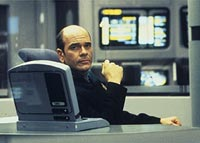
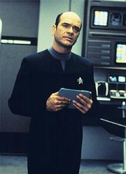
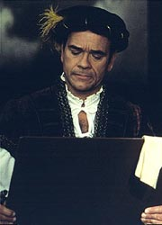
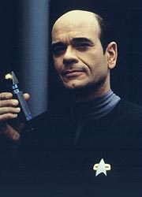
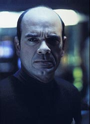
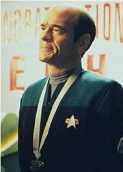
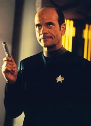
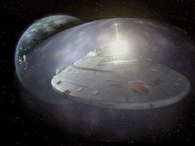

|

Clique aqui
para visitar o
Acervo de colunas


|
A maior jia da coroa de Voyager    A riqueza de informaes armazenadas em seu buffer de memria permitiram-lhe manter Neelix vivo com pulmes hologrficos, salvar a mdica Vidiian Danara Pel atravs de um corpo hologrfico temporrio, alterar material gentico para reintegrar as metades humana e Klingon de B'Elanna, restaurar a fisiologia de Tom e da capit aps uma srie de mutaes evolutivas, transformar uma drone Borg em humana, entre muitas outras coisas.  Mas, acima da preciso e eficcia nos tratamentos, a tripulao da Voyager aprendeu a valorizar, mesmo que tardiamente, a maior qualidade do mdico: a decncia e sensibilidade do ser por trs do programa. O Doutor nico em todos os sentidos e, embora tenha sido chamado por muitos de "rabugento", "irritadio" e "arrogante", nunca mudou seus modos para se adaptar s vontades dos colegas. Talvez seja o oficial mais criativo, carismtico, com personalidade mais forte e marcante, com maior senso de humor, melhor cantor e, surpreendentemente, mais humano. Para a permanncia da srie no ar, o personagem foi indispensvel. Durante entrevista feita em 1995, Robert Picardo disse que achava que o mdico hologrfico tinha as qualidades de uma alma. "Ele tem entonaes, mas no acho que nesse ponto tenha uma alma. Deixe-me colocar desta maneira: ele tem uma alma em sua formao." De fato, ao longo dos sete anos de produo do seriado na UPN, o Doutor amaciou de algum modo mais do que os outros personagens. "Tinha uma poca," disse, "em que Kes era a minha nica amiga, mas agora acho que ele mais cordial com os outros colegas".Picardo tambm se orgulha em dizer que, em Voyager, "foi beijado mais do que qualquer outro homem." Ele certamente teve sua dose de romances, comeando com a hologrfica Freya em "Heroes and Demons", passando pela Vidiian Danara Pel em "Lifesigns" e, mais recentemente, com Seven of Nine - um amor no correspondido. Ultrapassadas as barreiras da humanidade (lembrando aqui que, diferente de Data de A Nova Gerao, o Doc nunca quis ser humano), faltavam obstculos a serem quebrados com relao sua carreira na Frota.   Em 2376 (sexta temporada), o Doutor cria o ECH (Emergency Command Hologram), uma adio ao programa original que o instituiria no posto de capito, no evento de uma emergncia que incapacitasse a capit Janeway e a estrutura de comando casse. Tendo sua idia implementada no ano seguinte, ele assumiu o comando e operou sozinho a Voyager durante uma crise em "Workforce, Parts I & II". 
Daniel
Sasaki co-editor do Trek
Brasilis |
 O
Doutor uma figura hologrfica, um suplemento de emergncia mdica
desenvolvido por programadores da Frota Estelar. Quando o mdico-chefe
da nave e toda a sua equipe morreram no transporte ao quadrante
Delta, o holograma tornou-se cirurgio interino por necessidade.
Criado (e tratado) apenas como um objeto qualquer da Enfermaria,
passou a ser assistido por Tom e, mais tarde, Kes, uma aprendiz
que se mostrou bastante eficaz.
O
Doutor uma figura hologrfica, um suplemento de emergncia mdica
desenvolvido por programadores da Frota Estelar. Quando o mdico-chefe
da nave e toda a sua equipe morreram no transporte ao quadrante
Delta, o holograma tornou-se cirurgio interino por necessidade.
Criado (e tratado) apenas como um objeto qualquer da Enfermaria,
passou a ser assistido por Tom e, mais tarde, Kes, uma aprendiz
que se mostrou bastante eficaz.